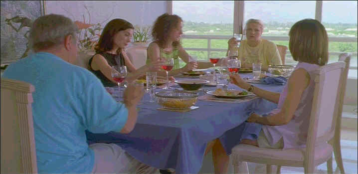

| Happiness/A-, B+ |
|
Trimark/1998/139m/WS 1.85 |
There so many terrific elements to Happiness.
Yet, it remains uncomfortable to view because of the odious nature of the
one of the dominent story threads. The black comedy succeeds with surprising
alacrity.
Writer/Director Todd Solondz who exhibited an
unusual life point of view in Welcome to the Doll House, his previous
feature film, actually ups the stakes with this pastiche of suburban values
clashing with the painful realities of individuals dealing with their own
idiosyncrasies.
 |
| Your
typical family dinner, right. © |
The Jordan sisters are at the center of
Solondz's world. Joy can't seem to settle anything in her life. Trish
appears the most normal sister living a quiet suburban lifestyle married to
psychiatrist Bill, but under the surface explosive desire is about to upend
their lives. Helen Jordan is a successful author. Parents Lenny and Mona
Jordan are living out their senior years in sunny Florida, still dealing
with the dysfunctional elements of their lives. Throw in Allen, an
overweight, lonely patient of Bill's obsessed with Helen, Vlad, a Russian
cab driver, and Diane, a hungry divorcee, and the Solondz stew comes to a
singing boil.
Despite the complex story-line, director Solondz keeps a
tight reign on the project. Pacing between the intertwined fragments is well
balanced into a thoroughly engrossing structure.
It's an excellent ensemble cast. Dylan Baker is hauntingly
pathetic as Bill. Phillip Seymour Hoffman brings characteristic discomfort
to Allen. Louise Lasser and Ben Gazzara are hilarious as the senior
Jordans.
An excellent DVD transfer reveals all the details of
the Solondz world with garish accuracy. Solondz shot Happiness is
bright hues and strong defining colors. It's all here on the DVD. The video
is very sharp. You can look into the eyes of the characters and begin to
understand on a deeper plane. There are no evident artifacts whether from
enhancement or the limitations of the NTSC system. Dolby Digital 2.0
surround is adequate. |
|
|
|

Selections from the
Feature Archive include articles on
Akira Kurosawa,
Blonde
Bimbos,
Frank
Darabont,
Steven Culp,
John Herzfeld or
Vietnam:
The Hollywood Pariah, and many more....
The Bitch Brigade

A line-up of lean-lipped actresses who marched through Hollywood in a
high heeled goose step armed with razor sharp dialogue. Click on the image
to read all about them.

The Movie Poster Archive
includes extensive poster images from the films of stars like Susan Hayward,
Kirk Douglas, Katharine Hepburn and many more. Our featured star is
William Holden.
 
Elegant DVD portal with news, reviews, links and information galore.

Great site for DVD followers. Lots of information, some speculation,
opinion, and reviews all bundled in a sparkling interface.

Original articles, DVD reviews, links, forum discussion and more.
|